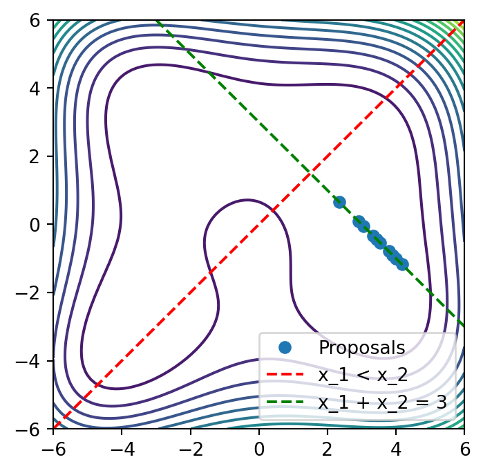
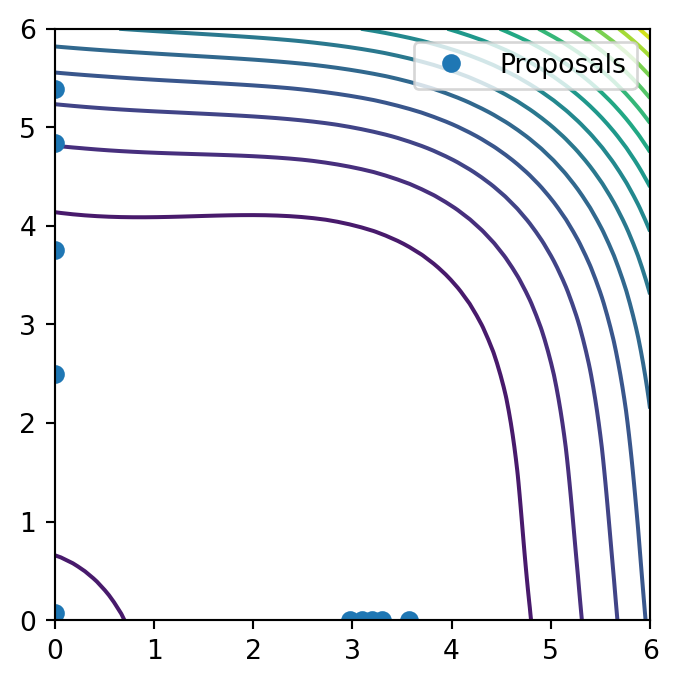
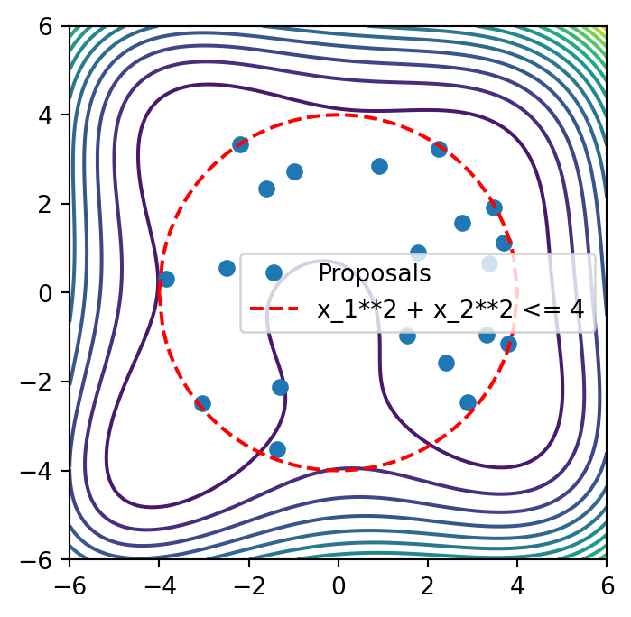
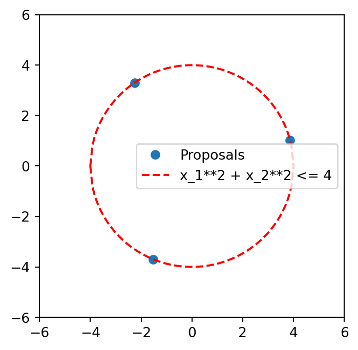
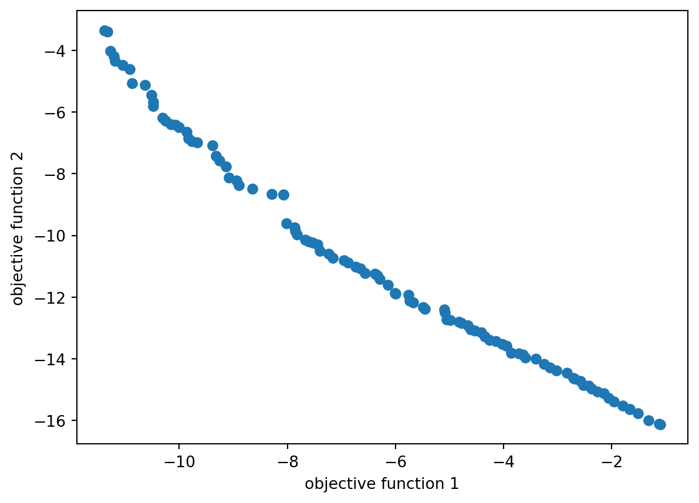

from copy import deepcopy
from time import time
from typing import ListFor optimizations in the bofire domain, a GA optimizer is available
Usage is possible in multiple ways: 1. As an alternative to the botorch optimizer in predictive strategies 2. To optimize custom function in the bofire domain. The utiliy function take care of the definition of the objective domain (variable types, constraints, etc.) and the handling of multiple experiment (\(q\) points).
import matplotlib.pyplot as plt
import numpy as np
import pandas as pd
import torchfrom bofire.benchmarks import api as benchmarks
from bofire.data_models.constraints import api as constraints_data_models
from bofire.data_models.domain import api as domains_data_models
from bofire.data_models.features import api as features_data_models
from bofire.data_models.strategies import api as strategies_data_models
from bofire.strategies import api as strategies
from bofire.strategies.utils import run_gaimport warnings
# Suppress specific warnings
warnings.filterwarnings("ignore", message=".*A not p.d., added jitter")
warnings.filterwarnings(
"ignore", message=".*np.power((rand * alpha), (1.0 / (eta + 1.0)))[mask]"
)The GA supports multiple different constraints
Genetic algorithms are quite flexible and can handle a variety of constraints. However, they usually struggle with equality constraints. In the implementation, linear equality- and inequality constraints, as well as N-choose-k cosntraints are handled by a repair function, using QP. Nonlinear constraints are handled by the GA objective function.
Example 1) Usage for Acquisition Function Optimization
Just pass the GeneticAlgorithmOptimizer to the acquisition_optimizer argument of a strategy. The optimizer will then be used to optimize the acquisition function.
benchmark = benchmarks.Himmelblau()
# generate experiments
experiments = benchmark.f(benchmark.domain.inputs.sample(10), return_complete=True)optimizer = strategies_data_models.GeneticAlgorithmOptimizer(
population_size=100,
n_max_gen=100,
verbose=False,
)benchmark_grid = np.hstack(
[
x.reshape((-1, 1))
for x in np.meshgrid(np.linspace(-6, 6, 100), np.linspace(-6, 6, 100))
]
)
benchmark_grid = pd.DataFrame(
benchmark_grid, columns=benchmark.domain.inputs.get_keys()
)
benchmark_grid["y"] = benchmark.f(benchmark_grid)["y"]def get_proposals(domain, n: int = 10) -> pd.DataFrame:
strategy = strategies_data_models.SoboStrategy(
domain=domain, acquisition_optimizer=optimizer
)
# map to strategy object, and train the model
strategy = strategies.map(strategy)
strategy.tell(experiments)
t0 = time()
proposals = strategy.ask(n, raise_validation_error=False)
print(f"Generated {len(proposals)} experiments, Time taken: {time() - t0:.2f}s")
return proposalsLinear Equality and Inequality Constraints are handled by a repair function, using QP
# generate different cases
domain = deepcopy(benchmark.domain)
domain.constraints.constraints += [
constraints_data_models.LinearEqualityConstraint( # x_1 + x_2 = 3
features=["x_1", "x_2"],
coefficients=[1, 1],
rhs=3,
),
constraints_data_models.LinearInequalityConstraint( # x_2 <= x_1
features=["x_1", "x_2"],
coefficients=[-1, 1],
rhs=0,
),
]
experiments = benchmark.f(
strategies.RandomStrategy.make(domain=domain).ask(10), return_complete=True
)proposals = get_proposals(domain)Generated 10 experiments, Time taken: 19.22splt.figure(figsize=(4, 4))
plt.contour(
benchmark_grid["x_1"].values.reshape((100, 100)),
benchmark_grid["x_2"].values.reshape((100, 100)),
benchmark_grid["y"].values.reshape((100, 100)),
levels=20,
label="true system response",
)
plt.plot(proposals["x_1"], proposals["x_2"], "o", label="Proposals")
plt.xlim(-6, 6)
plt.ylim(-6, 6)
plt.plot((-6, 6), (-6, 6), "r--", label="x_1 < x_2")
plt.plot((-6, 6), (9, -3), "g--", label="x_1 + x_2 = 3")
plt.legend()
plt.show()/tmp/ipykernel_2773/1104301492.py:2: UserWarning:
The following kwargs were not used by contour: 'label'

NChooseK Constraints are also handled by a repair function, using QP
domain = deepcopy(benchmark.domain)
domain.inputs.get_by_key("x_1").bounds = (0.0, 6.0)
domain.inputs.get_by_key("x_2").bounds = (0.0, 6.0)
domain.constraints.constraints += [
constraints_data_models.NChooseKConstraint(
features=["x_1", "x_2"],
min_count=1,
max_count=1,
none_also_valid=True,
),
]
experiments = benchmark.f(
strategies.RandomStrategy.make(domain=domain).ask(10), return_complete=True
)proposals = get_proposals(domain, n=10)Polishing not needed - no active set detected at optimal point
Polishing not needed - no active set detected at optimal point
Polishing not needed - no active set detected at optimal point
Polishing not needed - no active set detected at optimal point
Polishing not needed - no active set detected at optimal point
Polishing not needed - no active set detected at optimal point
Polishing not needed - no active set detected at optimal point
Polishing not needed - no active set detected at optimal point
Polishing not needed - no active set detected at optimal point
Polishing not needed - no active set detected at optimal point
Polishing not needed - no active set detected at optimal point
Generated 10 experiments, Time taken: 11.80splt.figure(figsize=(4, 4))
plt.contour(
benchmark_grid["x_1"].values.reshape((100, 100)),
benchmark_grid["x_2"].values.reshape((100, 100)),
benchmark_grid["y"].values.reshape((100, 100)),
levels=20,
label="true system response",
)
plt.plot(proposals["x_1"], proposals["x_2"], "o", label="Proposals")
plt.xlim(0, 6)
plt.ylim(0, 6)
plt.legend()
plt.show()/tmp/ipykernel_2773/2170543038.py:2: UserWarning:
The following kwargs were not used by contour: 'label'

Inequality Constraints are handled by the GA objctive function
domain = deepcopy(benchmark.domain)
domain.constraints.constraints += [
constraints_data_models.NonlinearInequalityConstraint(
expression="x_1**2 + x_2**2 - 16",
features=["x_1", "x_2"],
),
]
proposals = get_proposals(domain, n=20)Generated 20 experiments, Time taken: 9.60splt.figure(figsize=(4, 4))
plt.contour(
benchmark_grid["x_1"].values.reshape((100, 100)),
benchmark_grid["x_2"].values.reshape((100, 100)),
benchmark_grid["y"].values.reshape((100, 100)),
levels=20,
label="true system response",
)
plt.plot(proposals["x_1"], proposals["x_2"], "o", label="Proposals")
x = np.linspace(-4, 4, 100)
y1 = np.sqrt(16 - x**2)
y2 = -y1
plt.plot(x, y1, "r--", label="x_1**2 + x_2**2 <= 4")
plt.plot(x, y2, "r--")
plt.xlim(-6, 6)
plt.ylim(-6, 6)
plt.legend()
plt.show()/tmp/ipykernel_2773/1844526682.py:2: UserWarning:
The following kwargs were not used by contour: 'label'

Example 2) Usage for Custom Function Optimization
We can define a domain with input features, and constraints. Output features are not required
domain = domains_data_models.Domain(
inputs=domains_data_models.Inputs(
features=[
features_data_models.ContinuousInput(
key="x_1",
bounds=(-6, 6),
),
features_data_models.ContinuousInput(
key="x_2",
bounds=(-6, 6),
),
]
),
constraints=[
constraints_data_models.NonlinearInequalityConstraint(
expression="x_1**2 + x_2**2 - 16",
features=["x_1", "x_2"],
),
],
)optimizer = strategies_data_models.GeneticAlgorithmOptimizer(
population_size=100,
n_max_gen=100,
verbose=False,
)Define the optimization problem: a) Using evaluations on pd.DataFrame
We want to maximize the mean variance of the experiments dataframe. The objective function will be called with a list of dataframes, each representing a set of experiments. Each list entry is one individual in the population of the GA. The direction of the optimizer is a minimization of the objective function. So we minimize the negative mean variance of each 3 experiments in a batch in this case.
def objective_function(x: List[pd.DataFrame]) -> np.ndarray:
"""assume we want to maximize the mean variance of the experiments dataframe"""
vars = [xi.var(numeric_only=True).mean() for xi in x]
return np.array(vars)Run the optimization with the utility function run_ga
x_opt, f_opt = run_ga(
data_model=optimizer,
domain=domain,
objective_callables=[objective_function], # list of objective functions to optimize
q=3, # number of points to optimize
callable_format="pandas",
optimization_direction="max", # maximize the objective function
)proposals = x_opt[0]
proposals| column | x_1 | x_2 |
|---|---|---|
| 0 | 3.527112 | -1.877286 |
| 1 | -0.781389 | 3.921633 |
| 2 | -3.173771 | -2.432348 |
plt.figure(figsize=(4, 4))
plt.plot(proposals["x_1"], proposals["x_2"], "o", label="Proposals")
x = np.linspace(-4, 4, 100)
y1 = np.sqrt(16 - x**2)
y2 = -y1
plt.plot(x, y1, "r--", label="x_1**2 + x_2**2 <= 4")
plt.plot(x, y2, "r--")
plt.xlim(-6, 6)
plt.ylim(-6, 6)
plt.legend()
plt.show()
Define the optimization problem: a) Using evaluations on torch.Tensor
For efficiency, we can also compute the objective function as a callable of type Tensor. In this case, the computation is in the numerical domain.
This means, that categorical columns etc. are encoded. A specification with input_preprocessing_specs can be passed to the objective function (otherwise, defaults are used)
The objective accepts a Tensor in shape (n, q, d) and should return a Tensor of shape (n,)
def objective_function(x: torch.Tensor) -> torch.Tensor:
var = torch.var(x, dim=2)
var_mean = torch.mean(var, dim=1)
return var_meanx_opt, f_opt = run_ga(
data_model=optimizer,
domain=domain,
objective_callables=[objective_function], # list of objective functions to optimize
q=3, # number of points to optimize
callable_format="torch",
optimization_direction="max", # maximize the objective function
)x_opttensor([[ 2.7362, -2.9049],
[ 2.9588, -2.6893],
[-3.2198, 2.3077]], dtype=torch.float64)Example 3: Multiobjective Optimization
by giving multiple objective functions, or returning a 2D array from the objective, we will trigger multiobjective optimization
def objective_function_1(x: List[pd.DataFrame]) -> np.ndarray:
"""assume we want to maximize the mean variance of the experiments dataframe"""
vars = [xi.var(numeric_only=True).mean() for xi in x]
return np.array(vars)def objective_function_2(x: List[pd.DataFrame]) -> np.ndarray:
"""Maximize the sum of all inputs"""
vars = [xi.sum().sum() for xi in x]
return np.array(vars)x_opt, f_opt = run_ga(
data_model=optimizer,
domain=domain,
objective_callables=[
objective_function_1,
objective_function_2,
], # list of objective functions to optimize
q=3, # number of points to optimize
callable_format="pandas",
optimization_direction="max", # maximize the objective function
)In the multiobjective-case, the result is a list of pd.DataFrame with different pareto-optimal solutions
plt.scatter(f_opt[:, 0], f_opt[:, 1])
plt.xlabel("objective function 1")
plt.ylabel("objective function 2")Text(0, 0.5, 'objective function 2')
x_opt[0]| column | x_1 | x_2 |
|---|---|---|
| 0 | 3.030528 | 2.595640 |
| 1 | 2.424439 | 3.092565 |
| 2 | 3.587946 | 1.738537 |
x_opt[1]| column | x_1 | x_2 |
|---|---|---|
| 0 | 2.167818 | -3.303477 |
| 1 | 2.142017 | 3.371222 |
| 2 | -3.523940 | 1.849977 |